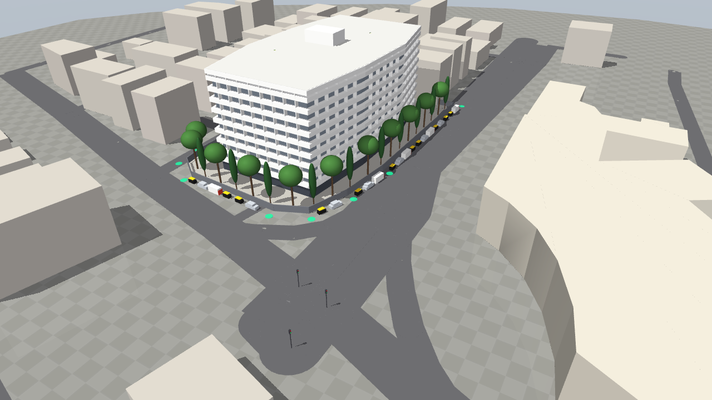
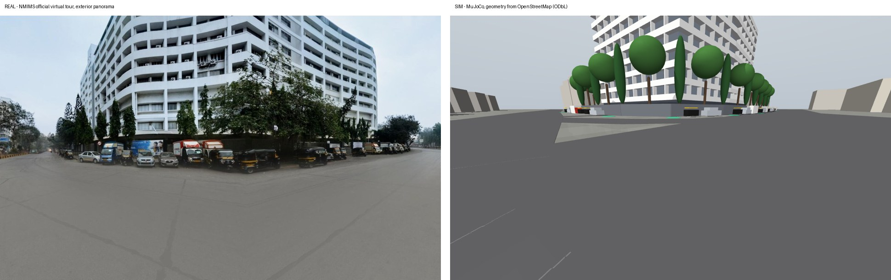

MPSTME GUARDIAN simulates two cooperating quadrotors patrolling the real perimeter of the NMIMS Main Building in Vile Parle (West), and measures — rather than asserts — how much faster they revisit every point on that perimeter, and how quickly they detect an intruder, than a guard on foot. The repository now follows the course scaffold exactly: one MJCF model, one control file with a TODO region per student, and an analytics folder whose benchmark CSV feeds the 4-page IEEE manuscript.
Everything in that row is measured in MuJoCo on the generated NMIMS scene. Three further results from this revision change what the team must build:
np.random.normal. It has been rewritten to read data only and to refuse any CSV that
lacks a provenance record. The scaffold CSV is preserved untouched as a placeholder.| Area | v1.0 (prototype) | v2.0 (this document) |
|---|---|---|
| Repository format | Own layout: src/patrol.py, run_patrol.py, one file per owner | Course scaffold: src/aerial_patrol_swarm.py with per-student TODO regions; analytics/; models/campus_perimeter_patrol.xml |
| Campus | Invented 120 × 90 m arena, 380 m ring | Real NMIMS Main Building campus from OpenStreetMap; 342 m ring |
| Ownership unit | Whole files | Files and marked regions inside the shared control file, enforced by src/check_region_ownership.py |
| Branches | feat/<roll>-<slug> | Course-assigned: feat/e043-lead-uav-flight-dyna, feat/e051-computer-vision-open, feat/e075-restricted-zone-geo-, feat/e077-csbs-campus-security |
| Trial count | N = 25 per configuration | N ≥ 80 (guide §4), paired by seed across conditions |
| Separation | 14 m vertical deconfliction | Guide APF retained, plus altitude layering, governor and sidestep — with measured evidence for why |
| Rotor layout | X-config, 0.22 m arms, 1.25 kg | “+” config, l = 0.26 m, m = 1.35 kg — matching the guide |
| Economics | Currency-based CapEx/OpEx | Strictly dimensionless (course rule: no currency symbols) |
The simulation should be recognisably MPSTME’s own institution. The NMIMS Main Building on V.L. Mehta Road was chosen over the MPSTME engineering block because NMIMS publishes an official virtual tour of it, which gives a photographic reference for appearance; the engineering block (OSM way 1056855968, 11 storeys, inside the SVKM compound on Gulmohar Road) remains available as a second scene using the same generator.

flowchart LR OSM["OpenStreetMap extract
ODbL · 121 elements
footprints · boundary · roads · signals"] --> GEN TOUR["NMIMS official virtual tour
exterior panorama only
appearance reference"] -.->|"proportions, materials,
trees, parked vehicles"| GEN GEN["build_nmims_scene.py
ENU metres, origin
19.10344 N 72.83646 E"] --> XML["nmims_main_campus.xml
GENERATED · static world"] GEN --> MAN["building_manifest.csv
every height tagged
OSM or ASSUMED"] XML --> MAIN["campus_perimeter_patrol.xml
airframes · cameras ·
intruder · zone"] MAIN --> SIM["aerial_patrol_swarm.py"] classDef src fill:#fff8ec,stroke:#b45309,color:#12161d classDef gen fill:#eef3ff,stroke:#1d4ed8,color:#12161d class OSM,TOUR src class GEN,XML,MAN,MAIN gen
| Element | Value | Source / status |
|---|---|---|
| Main Building footprint | 3,606 m² | OSM way 791070239 — Measured |
| Campus boundary | 6,473 m², 320 m | OSM way 1170351966 — Measured |
| Roads, junction signals | 115 segments, 3 signals | OSM highways — Measured |
| Main Building height | 10 storeys × 3.6 m = 36 m | Storeys counted from the tour panorama (top partly cropped) — Assumed |
| Surrounding building heights | By OSM type | Only a few carry building:levels in OSM — Assumed |
| Tree canopy tops | ≈ 15 m | Judged from the panorama — Assumed; drives cruise altitude |
| Boundary wall | 2.4 m | Assumed |
| Electrical substation zone | 18 × 8 m, north-west yard | Location not known — Assumed; confirm with the estates office |

tour_viewpoint camera placed at the same junction. The real image is a panorama
projection, so the comparison is qualitative: massing, facade rhythm, frontage trees and parked
vehicles match; exact heights do not, and are flagged as assumed.The course guide and scaffold supply target figures. Under the zero-hallucination mandate they are targets to be replaced by measurement, never results. On the real NMIMS perimeter several of them will not hold, and that is expected.
| Figure (guide / scaffold) | Value | Status | Resolution |
|---|---|---|---|
| Guard perimeter cycle Tguard | 48.72 min | Placeholder | E077 — define the comparator (perimeter-only walk vs. full building round) and measure it. A 342 m perimeter walk at 1.2 m/s takes ≈ 5 min; 48 min only makes sense for a round that includes floors. |
| Dual-UAV cycle TUAV | 7.84 min | Superseded | Measured on the real ring: 0.69 min worst-case revisit (offset ring, 3 smoke trials). |
| Speedup S = Tguard/TUAV | 6.21× | Placeholder | Recompute from both measured columns. |
| Labour reallocation η | 0.70 (50.4 / 72 guard-h/day) | Placeholder | E077 — from the actual NMIMS security roster. |
| Normalised OpEx Chybrid, CapEx K | 0.66, 0.31 | Placeholder | E077 — sourced assumptions or a parametric sensitivity band. |
| Payback P | 10.94 months | Placeholder | Derived from the above; reported as a band. |
| Blind spots, CCTV → UAV | 35.8 % → 1.2 % | Placeholder | E075 — computed from camera footprints with tree and building occlusion. |
| Vision latency, 1000 → 5 lx | 28.42 → 49.24 ms | Placeholder | E051 — wall-clock timing of the real detector per illumination tier. |
| IoU across illumination | ≥ 0.738 | Placeholder | E051 — against projected ground-truth boxes. |
campus_patrol_benchmark.csv | 80 rows | Synthetic | Generated by np.random.seed(42) in the scaffold. Replaced only by run_benchmark.py. |
| ID | Objective | Metric (CSV column) | Target | Owner |
|---|---|---|---|---|
| O1 | Shorten the time any perimeter node is unobserved | uav_cycle_min vs guard_cycle_min | Significant, paired by seed | E043 / E077 |
| O2 | Shorten time-to-detect an intrusion | uav_detect_lat_s vs guard_detect_lat_s | Significant; randomised appearance | E051 / E077 |
| O3 | Show the coordination policy drives the gain | offset ring vs sectors, equal energy | CI-separated | E043 |
| O4 | Never lose separation | min_sep_m | ≥ 2.5 m in every trial | E043 |
| O5 | Real-time detection across illumination | latency (ms), IoU per lux tier | < 50 ms (20 FPS); IoU > 0.70 | E051 |
| O6 | Correct, stable zone classification | 4-tier FSM accuracy, chatter count | No chatter at the boundary | E075 |
| O7 | Close perimeter blind spots | blind_spot_pct | Reported with occlusion | E075 |
| O8 | Dimensionless operational case | S, η, ΔOpEx, P | Band, from measured inputs | E077 |
flowchart TB
subgraph MOD["models/ — E043"]
XML["campus_perimeter_patrol.xml
airframes · nadir cameras · intruder · zone"]
SCN["nmims_main_campus.xml
generated NMIMS world"]
end
subgraph SRC["src/aerial_patrol_swarm.py — one class, four regions"]
R43["E043 region
cascade · mixer · APF + layered separation
sectors / offset ring · mission phases"]
R51["E051 region
detect_intruder_hsv
inverse_pinhole_projection"]
R75["E075 region
evaluate_geofence_status
4-tier FSM · hysteresis · RTL triggers"]
LOOP["E043 integration loop
step_simulation · telemetry"]
end
subgraph ANA["analytics/"]
RB["run_benchmark.py — E043
only producer of the CSV"]
CSV[("campus_patrol_benchmark.csv
+ provenance.json")]
ECO["campus_security_economics.py — E077"]
FIG["generate_paper_figures.py — E043
read-only"]
end
PAPER["docs/RESEARCH_PAPER_MANUSCRIPT_BLUEPRINT.md
all authors"]
XML --> LOOP
SCN --> XML
LOOP --> R43
LOOP -->|"640×480 frame"| R51
R51 -->|"ground point"| R75
LOOP --> RB --> CSV
CSV --> ECO
CSV --> FIG
ECO --> PAPER
FIG --> PAPER
classDef m fill:#dbeafe,stroke:#1e40af,color:#12161d
classDef a fill:#fde7cd,stroke:#8a4408,color:#12161d
classDef z fill:#e9d7fe,stroke:#5925a5,color:#12161d
classDef s fill:#ccfbef,stroke:#04635a,color:#12161d
classDef d fill:#fff8ec,stroke:#b45309,color:#12161d
class XML,SCN,R43,LOOP,RB,FIG m
class R51 a
class R75 z
class ECO s
class CSV,PAPER d
>>> E0xx / <<< E0xx
markers; a pull request may change only lines inside its author’s region.flowchart TB WP["Waypoint
route from patrol_cp sites"] --> P["P position loop
6 m/s cap"] P --> SEP["Separation layers
governor + right-hand sidestep"] SEP --> PI["PI velocity loop
+ APF force / m"] PI --> INV["Flat-output inversion
thrust · roll* · pitch*
yaw held at 0"] INV --> LIM["28° tilt cap
110°/s slew"] LIM --> PD["PD attitude
τ = I_body(Kp·e − Kd·ω) + ω × I_body ω"] PD --> MIX["“+” mixer
exact inverse of the MJCF gear matrix"] MIX --> ROT["4 rotor thrusts, 0–7.5 N"] --> MJ["MuJoCo 3.13
implicitfast, 4 ms"] MJ -->|"pos, vel"| P MJ -->|"quat, ω"| PD W["OU gust field → opt.wind"] --> MJ classDef c fill:#eef3ff,stroke:#1d4ed8,color:#12161d class P,SEP,PI,INV,LIM,PD,MIX c
τx = l (F2 − F3) τy = l (F1 − F0)
τz = kQ (F0 + F1 − F2 − F3) T = F0 + F1 + F2 + F3
guide notation: τB = [ l(T4−T2), l(T1−T3), cQ(T1−T2+T3−T4) ]
with T1 = rotor1, T2 = rotor3, T3 = rotor0, T4 = rotor2
flowchart LR S1["Strategic
altitude layers
Alpha 20 m · Bravo 24 m"] --> S2["Tactical
closing-speed governor
active inside 14 m"] S2 --> S3["Deadlock breaker
right-hand sidestep
1.6 m/s"] S3 --> S4["Last resort
guide APF
k = 8.5, d_safe = 2.5 m"] classDef c fill:#eef3ff,stroke:#1d4ed8,color:#12161d class S1,S2,S3,S4 c
tests/test_e043_separation.py,
head-on at 6 m/s each, layers disabled): APF alone reaches 0.40 m — contact; with governor and
sidestep, 3.29 m and the pair passes. Analytically, the work APF can do from dsafe to d is
(k/2)(1/d − 1/dsafe)²; equating it to the 48.6 J closing energy gives d = 0.26 m.
stateDiagram-v2
[*] --> Takeoff : rooftop dock
Takeoff --> Transit : altitude ≥ 42.5 m
Transit --> Descend : over first waypoint
Descend --> Patrol : within 1 m of layer altitude
Patrol --> Patrol : checkpoint serviced
Patrol --> RTL : SoC ≤ 20 % or heartbeat lost > 1.5 s
RTL --> [*]
state Patrol {
[*] --> S0
S0 --> S1 : person detected
S1 --> S2 : inside 5 m buffer
S2 --> S3 : inside zone by 0.5 m
S3 --> S1 : outside by 2.0 m for 3 frames
S1 --> S0 : no detection
}
sequenceDiagram autonumber participant L as Loop (E043) participant R as Renderer participant D as detect_intruder_hsv (E051) participant P as projection (E051) participant G as geofence FSM (E075) participant T as Telemetry / CSV L->>R: cam_alpha, cam_bravo at 30 Hz R-->>D: 640×480 RGB frame D->>D: HSV threshold, morphology, contours D-->>L: (u, v, bbox) or None — wall-clock timed L->>P: (u, v) + full camera pose P-->>G: ground point (X, Y) G->>G: tier 0–3 with hysteresis G-->>T: alert packet (JSON/CSV) L-->>T: detected, latency_ms, status
detect_intruder_hsv exists it raises
NotImplementedError; the loop then records “not implemented” and reports no
detections. The scaffold instead logged 28.5 + N(0, 2) ms whenever the aircraft came
within 12 m — synthetic data, now removed.
flowchart LR
SEED["seeds + commit"] --> RB["run_benchmark.py"]
RB --> CSV[("benchmark CSV")]
RB --> PROV[("provenance.json
model, scene and code hashes")]
CSV --> FIG["generate_paper_figures.py"]
PROV -->|"required"| FIG
CSV --> ECO["economics (E077)"]
FIG --> MS["manuscript"]
ECO --> MS
X["scaffold CSV
np.random, no provenance"] -.->|"REFUSED
exit 2"| FIG
classDef bad fill:#fff5f4,stroke:#b42318,color:#12161d
class X bad
--allow-placeholder exists only for
layout previews and watermarks every figure “PLACEHOLDER DATA — NOT FOR SUBMISSION”.The course scaffold is a starting point with deliberate student boundaries. Working through it on
the real scene surfaced the issues below. Each was checked empirically before being recorded; the
original scaffold is preserved untouched in _scaffold_original/ for comparison.
| # | Finding | Evidence | Resolution / owner |
|---|---|---|---|
| 1 | Nadir cameras point at the sky | euler="3.1415 0 0" flips the camera’s −z view axis to +z; rendered frame is entirely black | Rotation removed — Fixed E043 |
| 2 | No yaw authority | All rotor gears 0 0 1 0 0 0 — no drag torque, so no yaw moment can be produced | tz = ±0.0201 per rotor pair — Fixed E043 |
| 3 | Arm length mismatch | Guide l = 0.26 m; MJCF sites at 0.20 m | Aligned to 0.26 m — Fixed E043 |
| 4 | Focal length mismatch | fovy 60° → f = 415.7 px; guide uses f = 450 px | fovy 56.14° → 450 px — Fixed E043 |
| 5 | Figure script fabricates the benchmark CSV | np.random.normal(loc=48.72 …), overwrites on every run | Read-only + provenance gate — Fixed E043 |
| 6 | Synthetic detection latency in the loop | 28.5 + np.random.normal(0, 2.0) when within 12 m | Removed; latency is now wall-clock measured — Fixed E043 |
| 7 | Kinematic “flight” | step_simulation placed drones on a circle; no physics | Full MuJoCo closed loop — Fixed E043 |
| 8 | APF separation claim | Head-on at cruise: 0.40 m, contact | Layered separation — Fixed E043 |
| 9 | Level-camera projection | Ground error 2.5–3.0 m median, 11–13 m p95 at measured tilt | Use full camera pose — Open E051 |
| 10 | Geofence bounds hard-coded to the old scene | (13, 15, 23, 25) no longer matches any zone | Use self.substation_bounds read from the model — Open E075 |
| 11 | Economics constants hard-coded | 48.72, 7.84, 0.66, 0.31 typed into the model | Read inputs from the benchmark CSV — Open E077 |
| 12 | Blueprint trial count | Abstract and §V say N = 50; guide §4 requires ≥ 80 | Use N ≥ 80 — Open all |
| 13 | Related Work text does not match the papers | e.g. [5] Mittal is an object-detection survey but is described as collision avoidance; [3] Wu is task allocation, described as mechanical damping. All six DOIs verified genuine against Crossref. | Rewrite §II from the papers themselves — Open all |
| 14 | Pre-written conclusions | Blueprint states p < 0.001 “across all metrics” before any data exists | Write results last, from the CSV — Open all |
| 15 | Red intruder avatar | Makes HSV detection trivially easy; real people are not red | Report as a limitation; the scene’s red tempo cabs and signal lamps are a built-in false-positive test — E051 |
| ID | Requirement | Owner | Verification / status |
|---|---|---|---|
| FR-01 | The scene shall reproduce the NMIMS Main Building campus from measured footprints, with every assumed value listed in a manifest. | E043 | Generator + manifest Met |
| FR-02 | All scaffold element names shall be preserved so src/test_env.py passes unmodified. | E043 | test_env passes Met |
| FR-03 | Each airframe shall be actuated only by four rotor thrusts, with yaw from rotor drag torque. | E043 | Mixer is the exact inverse of the gear matrix Met |
| FR-04 | Altitude shall be held within ±0.5 m in gusts. | E043 | ±0.033 m measured Met |
| FR-05 | Inter-UAV separation shall stay ≥ 2.5 m in every trial, including head-on encounters. | E043 | 3.29 m head-on; ≥ 6.3 m in patrol Met |
| FR-06 | Both the guide’s sector policy and an offset-ring policy shall be selectable. | E043 | --policy Met |
| FR-07 | The benchmark CSV shall be produced only by seeded simulation, with provenance. | E043 | run_benchmark.py Met |
| FR-08 | Intruder appearance time shall be randomised per seed. | E043 | Uniform 40–160 s Met |
| FR-09 | An RTL behaviour shall return the aircraft to its dock when E075 raises the trigger. | E043 | Open |
| FR-10 | The scene shall offer four illumination tiers (1000, 250, 50, 5 lx equivalents). | E043 | Open |
| FR-11 | Detection shall use only the rendered RGB frame — never simulator state. | E051 | Open |
| FR-12 | Ground projection shall use the full camera pose (tilt and yaw), not the level-camera formula. | E051 | Error budget: < 1 m p95 Open |
| FR-13 | IoU shall be scored against ground-truth boxes projected from the intruder geometry. | E051 | Open |
| FR-14 | Latency and IoU shall be reported per illumination tier in vision_illumination_benchmark.csv. | E051 | Open |
| FR-15 | The geofence shall read zone geometry from the model and test true polygons by ray casting. | E075 | Open |
| FR-16 | The 4-tier FSM shall apply hysteresis (enter 0.5 m inside, clear 2.0 m outside for 3 frames). | E075 | Open |
| FR-17 | RTL shall trigger at SoC ≤ 20 % or heartbeat loss > 1.5 s. | E075 | Open |
| FR-18 | Alert packets shall be serialised to JSON/CSV with tier, time, aircraft and ground point. | E075 | Open |
| FR-19 | blind_spot_pct shall be computed from camera footprints with tree and building occlusion. | E075 | Open |
| FR-20 | The guard comparator shall be defined and measured, filling guard_cycle_min and guard_detect_lat_s. | E077 | Open |
| FR-21 | The economics model shall read its inputs from the benchmark CSV and contain no currency symbols. | E077 | Open |
| FR-22 | Every pull request shall pass check_region_ownership.py before merge. | E043 | Gate built and self-tested Met |
| ID | Attribute | Requirement |
|---|---|---|
| NFR-01 | Reproducibility | A seed reproduces its trial; provenance records model, scene and controller hashes. |
| NFR-02 | Runtime | Measured: 150 s simulated in 5.8 s with vision off. The 80-trial batch must fit in one sitting even with vision on. |
| NFR-03 | Portability | pip install mujoco numpy scipy matplotlib opencv-python; no GPU required. |
| NFR-04 | Attribution | Every line in the shared file belongs to exactly one roll number (region markers). |
| NFR-05 | Honesty of stand-ins | Unimplemented parts raise NotImplementedError or write NaN — never a plausible default. |
| NFR-06 | Format fidelity | The course directory tree is preserved; additions are listed in the README tree. |
| Column | Owner | Definition |
|---|---|---|
trial_id | E043 | 1…N; each maps to a seed in the provenance record |
uav_cycle_min | E043 | Worst-case gap between consecutive services of any checkpoint, both aircraft merged, in minutes |
min_sep_m | E043 | Minimum 3-D inter-UAV distance while both are on patrol |
uav_detect_lat_s | E051 | First detection time minus intruder appearance time (simulated seconds) |
blind_spot_pct | E075 | Share of the perimeter wall line never inside an unoccluded camera footprint during the trial |
guard_cycle_min | E077 | Guard comparator cycle for the same perimeter, under the stated definition |
guard_detect_lat_s | E077 | Guard time-to-detect for the same intrusion schedule |
Empty cells mean “owner’s code not yet merged”. They are never filled with a constant.
campus_patrol_benchmark.provenance.json — UTC time, commit, policy, trials, wind range, model/scene/controller hashes, Python and MuJoCo versions, per-trial seed, wind and appearance time.analytics/runs/telemetry_*.csv — per-run flight telemetry at 30 Hz (gitignored; regenerable from seed).analytics/vision_illumination_benchmark.csv (E051) — lux, mean_latency_ms, std_latency_ms, iou_median, iou_iqr, n_frames.| Factor | Levels | Why |
|---|---|---|
| Coordination policy | sectors (guide) · offset ring | Isolates the policy effect — the paper’s contribution |
| Seed | ≥ 80, shared across policies | Pairs trials, so a paired t-test is legitimate (blueprint specifies paired) |
| Wind | mean 0–6 m/s, OU gusts | Rejects the “calm air only” criticism |
| Intrusion time | uniform 40–160 s per seed | Latency must measure the system, not one lucky geometry |
| Illumination | 1000 · 250 · 50 · 5 lx tiers | Guide’s latency/IoU-versus-light analysis |
Statistics: paired two-tailed t-test per metric, with mean difference, 95 % CI and effect size; IoU reported as median and IQR; every plotted mean carries a standard-error bar and its n.
The course forbids currency. The guide’s structure is kept; its inputs change from typed constants to measurements and sourced ratios:
S_patrol = guard_cycle_min / uav_cycle_min (both from the CSV) eta_labor = H_reallocated / H_total (NMIMS roster; E077) dOpEx = 1 − C_hybrid / C_guard-only with C_guard-only ≡ 1.00 P_payback = K_CapEx,normalised / dOpEx reported across a band of C_hybrid and K
| ID | Risk | Owner | Mitigation |
|---|---|---|---|
| R-01 | Scaffold placeholder numbers reach the manuscript | E043 | Figure gate; review checklist; §4 status table at every merge |
| R-02 | Detector not finished in time | E051 | Starts day 1 with offline frame fixtures; loop already degrades honestly |
| R-03 | Merge conflicts in the shared control file | E043 | Region markers + ownership gate; daily integration |
| R-04 | Assumed heights or zone location are wrong | E077 / E075 | Site check; one-line change in the generator, then regenerate |
| R-05 | Geofence misfires from projection error | E051 / E075 | FR-12 pose-aware projection; hysteresis |
| R-06 | A member cannot defend their region at the viva | All | Nobody writes inside another member’s region |
run_benchmark.py produced it with provenance.gantt title Four-week CDIO sprint (pin to the academic calendar) dateFormat YYYY-MM-DD axisFormat %d %b section Done NMIMS scene + airframe fixes :done, d1, 2026-10-05, 4d Flight stack + separation evidence :done, d2, 2026-10-07, 2d Integrity gates + ownership gate :done, d3, 2026-10-08, 1d section Conceive Guard comparator + site check :crit, c1, 2026-10-12, 3d section Design Detector, projection, FSM :crit, i1, 2026-10-12, 8d Illumination tiers + RTL :i2, 2026-10-14, 4d section Implement Coverage + economics wiring :i3, 2026-10-19, 4d 80-trial paired batch :crit, i4, 2026-10-23, 2d section Operate Statistics + figures :o1, 2026-10-26, 3d Manuscript + LinkedIn video :o2, 2026-10-27, 5d Viva rehearsal :milestone, o3, 2026-11-02, 0d
| ID | Question | Owner |
|---|---|---|
| Q-01 | Does the course faculty accept the NMIMS Main Building scene in place of the scaffold’s generic 60 × 60 m campus? | E043 |
| Q-02 | Are the scaffold fixes in §7 (camera orientation, yaw torque, figure script) acceptable changes to “provided” files? | E043 |
| Q-03 | Guard comparator: perimeter-only walk, or the full security round including floors? | E077 |
| Q-04 | Where is the electrical substation on the NMIMS Main campus, and how many storeys does the building have? | E075 / E077 |
| Q-05 | May the tour panorama appear in the public LinkedIn video? | E043 |
PRD v2.0 · companion: Implementation & Review Plan v2.0. Contains information from OpenStreetMap, © OpenStreetMap contributors, ODbL 1.0.